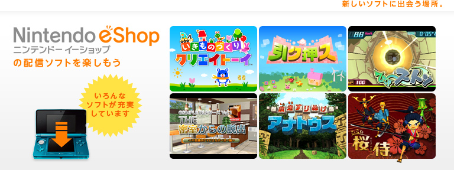
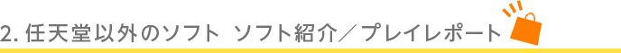
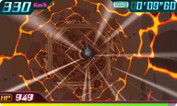
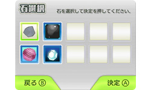
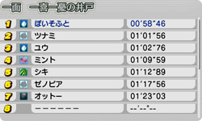
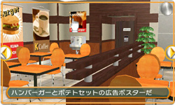
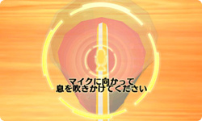
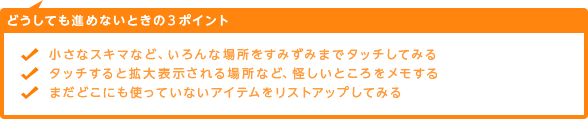
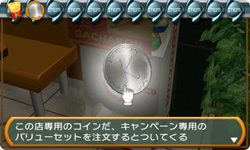
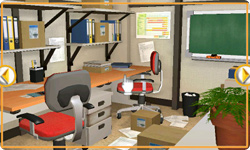

井戸の中の障害物をよけたりアイテムをゲットしながら、井戸の底にたどり着けばステージクリアです。とてもシンプルなルールで、短い時間でも気軽に楽しむことができます。
筆者は実物の井戸をのぞいてみたことはありませんが、木材の破片、ドーナツ、トランポリン、大砲などなど、ビックリするような障害物がたくさん出現します。
石の操作に必要なのはスライドパッドだけなので簡単そうですが、石は空中を落ちているので、なかなか思うように動かせません。

また、井戸の中を落下するのは、石だけではありません。ゴムボールや鉄球など、全部で10種類あり、特定の条件を満たすと使えるようになります。しかも、それぞれスピードや壊れやすさが違います。最初のうちはゴムボールや鉄球など壊れにくいものでステージを覚えて、慣れてきたらスピードの速い石や宝石でタイムアタックに挑戦する、という順番でプレイすれば、より早く上達できるでしょう。

ちなみに、井戸の中を落下する石たちには、それぞれの背景となるちょっとしたストーリーがあります。
これを読んでからゲームをやりこんでいくと、何もしゃべらない石たちなのに、なんとなく感情移入してしまいます。全ステージをクリアしたら、今度は最速タイムの更新や、全種類の石でのクリアを目指してみましょう。

店内のあちこちに散らばっているアイテムを探して組み合わせて謎を解き、全3ステージのクリアを目指します。アドベンチャーゲームというと、初めての方には難しそうなイメージがあるかもしれませんが、ヒントもたくさん用意されているので安心です。

また、慣れている方にとっても十分な遊びごたえのあるボリュームで、謎が解けたときの快感もしっかりと味わえます。
怪しい場所を見つけたら、スライドパッドやボタン操作、または画面をタッチして調べてみましょう。さらに、アイテム同士を組み合わせたり、そのアイテムならではの使いかたを知恵をしぼって考えてみてください。
きっと、思いがけない何かが起こるはず。
筆者は全ステージをクリアできましたが、どうしても先に進めなくなったら、まず以下のことを試してみると良いかもしれません。


怪しいのにまだ何も起きていない場所と、まだ使っていないアイテムがあったら、頭をひねってそれらを組み合わせてみましょう。
アイテム選択画面でアイテムを裏返してみたり、ほかのアイテムと組み合わせられないか調べてみるのも有効です。ただし、ゲームの後半になると、すでに謎を解いた場所や使ったアイテムを、もう一度利用するようなことが出てきます。
選択肢が増えるのでちょっと大変ですが、その分だけ、謎が解けたときのうれしさも倍増します。

誰もいないリアルで殺風景な店内の不気味さや、閉じこめられているのにひょうひょうとした主人公のキャラクターも、このゲームの味です。そしてイメージキャラクター「ドナルクマ」に秘められた不思議な謎とは……。ぜひあなたも、この謎にチャレンジしてみてください。